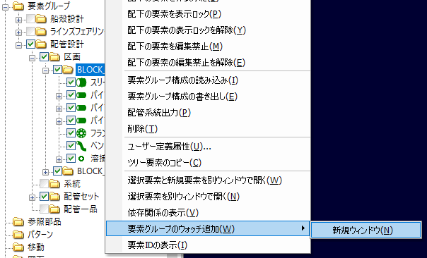
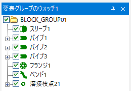
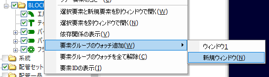
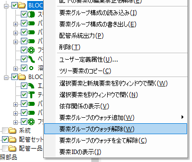

「要素グループのウォッチ」ウィンドウは、指定した要素グループだけをツリー表示するウィンドウです。 アプリケーション起動直後は表示されていませんが、ウォッチ対象要素グループを指定するとモデル構成ウィンドウの右側に表示されます。
ウォッチしたい要素グループのコンテキストメニューから「要素グループのウォッチ追加」「新規ウィンドウ」を選択します。

要素グループのウォッチウィンドウが表示され、その中に選択した要素グループがツリー表示されます。

要素グループはいくつでも追加できます。ウォッチウィンドウは複数表示できます（最大4つ）。

すでにウォッチしている要素グループのコンテキストメニューで「要素グループのウォッチ解除」を実行すると、ウォッチウィンドウから削除されます。

ウォッチウィンドウ上でウォッチ解除を実行するとそのウィンドウから、それ以外のウィンドウ（構成ウィンドウなど）から実行すると、すべてのウォッチウィンドウからグループが削除されます。
ウォッチしているすべての要素グループをウォッチウィンドウから削除する場合は、「要素グループのウォッチを全て解除」を実行します。
ウォッチしている要素グループの情報はドキュメントファイルに保存されます。
ドキュメントファイルを読み込んだ際、ウォッチウィンドウが表示されていなかったら、メニューの「表示→要素グループのウォッチ」を選択して表示してください。